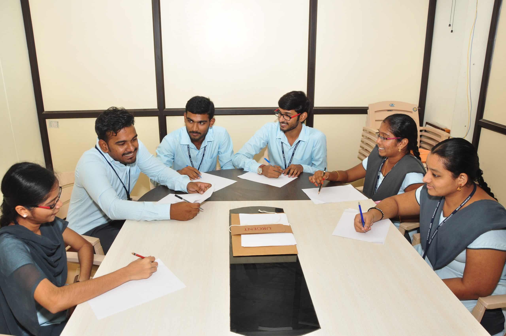

Welcome to the Department of Civil Engineering
About the Department
The department of Civil Engineering was established in the year 2011 with an intake of 60. Eight batches of students nearly 480 have successfully completed their graduation so far from the department. Our strength is our faculty. We have twelve dedicated faculty members and three supporting staff members. In 2015 the department has also started Master of Technology (M. Tech) programme with initial intake of 24 students with Transportation Engineering as specialization. The department has nine physical laboratories to fulfill the needs of academic and industrial requirements including are Concrete, Transportation Engineering, Geotechnical Engineering , Environmental Engineering , Survey , Geology , Hydraulic Engineering , Computer aided engineering , GIS & CAD lab, Strength of materials, FM & HM Lab and Irrigation Design and Drawing. All laboratories are equipped with state of the art equipment to suit the emerging technologies and career opportunities
About the Head of Department
Dr. T. Kiran Kumar has been working as Professor, Department of Civil Engineering in a reputed institution – St. Anns College of Engineering & Technology, Chirala, Bapatla Dist., A.P. since July 2024. He has put in 25 years of teaching experience in various positions as a Assistant Professor, Associate Professor, Professor. His areas of Subjects are Water Resources Engineering, Irrigation & Hydraulic Structures, Fluid Mechanics, Hydrology, Design & Drawing of Irrigation Structure etc. He obtained his B.Tech. from S.V. University, Tirupati in the year 1994, M.Tech. from JNTU University Hyderabad in the year 1998. He obtained Doctor of Philosophy in Water Resources Engineering in the year 2012. From JNTU Ananthapur, A.P. He has published more than 65 papers in various International, National, Conferences, so far. He attended more 20 workshops and delivered guest lectures on various themes. He guided Ph.D., M.Tech., B.Tech. students. He received NPTEL believers Award in the year 2020. He is the recipient of the Best Global Teacher Award 2022 from D.K.S. Education Awards. He published a book entitled “Integrated Watershed Management in Drought Prone Areas” in the year 2023.